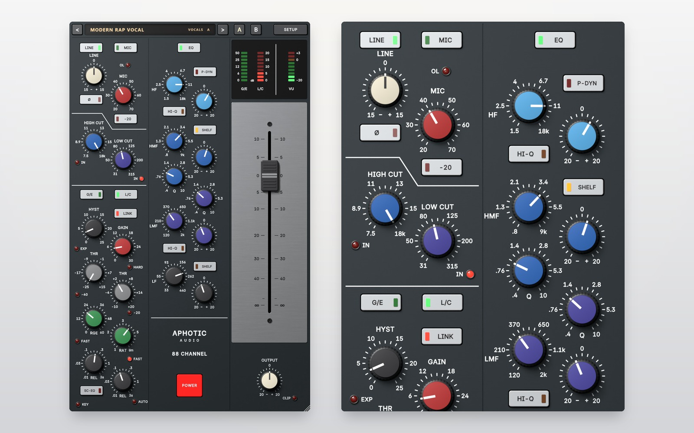

Channel strip New
88 CHANNEL
A console channel in one strip: line and mic preamp, low and high cut, gate and expander, compressor and limiter, a four-band equaliser, fader and output stage. Clean at ordinary levels, and it colours when you push it.
- Line amplifier, or a transformer mic preamp with 20 to 70 dB of gain, a pad and polarity; low and high cut
- Gate or 2:1 expander with hysteresis, and a compressor and limiter with soft or hard knee, fast attack and automatic release
- Four-band equaliser: two parametric mids, high and low bands as bell or shelf with Hi-Q. Small boosts are broad, large ones sharp
- Three orders: dynamics then EQ, EQ then dynamics, or the EQ in the side chain for de-essing; stereo link and an external key
- A fader into an output amplifier and transformer that colour when pushed, then a clean output trim
- Oversampling up to 16x with linear-phase filters and antialiased clipping
- Lamp meters for level and gain reduction; 27 presets, A/B, undo and redo, resizable window
Free with an Aphotic Audio account. Installs in one click.

- Latency
- None at Eco; 51 samples at Normal, about 1 ms (reported to your DAW)
- Formats
- Windows VST3 (64-bit). Not on Mac yet
- Version
- 1.0.0
- License
- Free with an Aphotic Audio account
88 CHANNEL is original software. It is not made, licensed or endorsed by the maker of any console or of any other plug-in.